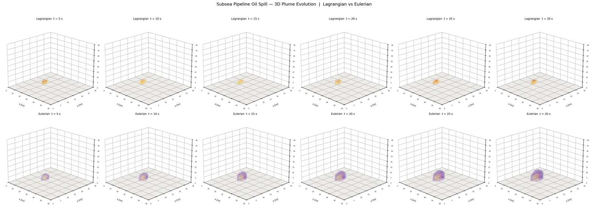

设置具有垂向切变的水平流，并加入较弱的横向输运。
Independent Numerical Experiment · Course Training
三维溢油输运的拉格朗日—欧拉对比
以理想化海底管道泄漏为场景，用液滴轨迹和连续浓度场两种方式表示污染物输运，并比较它们对羽流形态的表达。
An independent course-based numerical experiment comparing Lagrangian droplets with an Eulerian concentration field in an idealized subsea oil-release scenario. The model is designed for conceptual comparison and is not calibrated for operational spill prediction.

Question
离散粒子和连续浓度场都可以描述污染物输运，但它们突出的是不同信息：粒子方法直观呈现个体路径和粒径差异，欧拉方法更适合观察整体浓度分布。这个实验比较两者在同一背景流与浮升条件下的表现。
Approach
给液滴分配粒径、浮升速度和随机游走，跟踪位置与到达表面的过程。
在三维网格上计算平流、扩散与源项作用下的连续浓度变化。
比较羽流演化、垂向剖面、表面油膜和统计量，而不是只生成一幅最终图。
Interpretation
两种方法的扩散形态并不完全相同：粒子表示更容易保留离散性和随机波动，连续浓度场则表现得更平滑。差异来自数值表示、扩散处理和可视化方式，不能简单地把其中一张图认定为“更真实”。
Limits
- 物理过程经过明显简化，参数并未针对真实溢油事件率定。
- 没有真实地形、潮汐、波浪、风场、复杂油品组分和观测数据验证。
- 图中结果仅用于课程训练和方法比较，不可用于应急预测或风险决策。